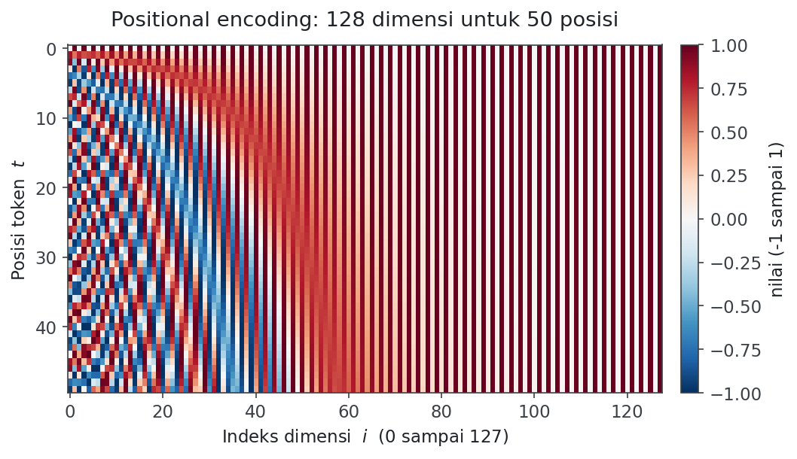
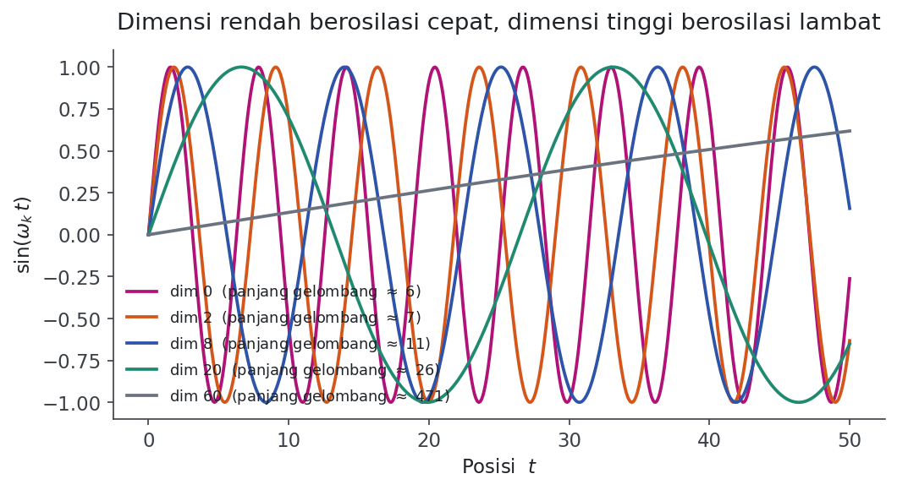
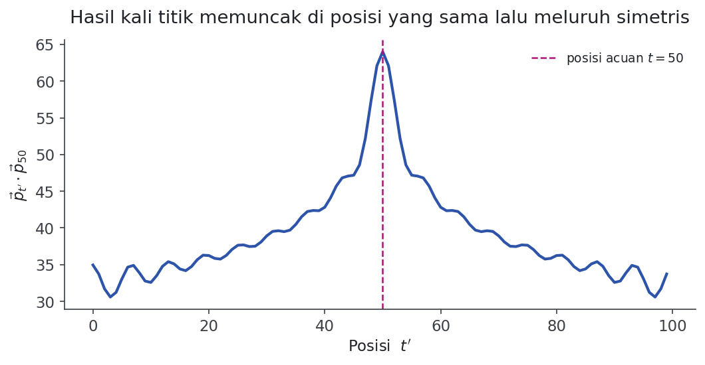

01Mengapa Transformer Butuh Informasi Posisi
Urutan dan posisi kata adalah bagian mendasar dari bahasa apa pun. Urutan menentukan tata bahasa, dan karena itu menentukan makna sebuah kalimat. "Anjing menggigit anak" jelas berbeda dari "Anak menggigit anjing", meski kata-katanya identik.
Recurrent Neural Network (RNN), yaitu jaringan saraf yang memproses barisan secara berurutan satu langkah demi satu langkah, memperhitungkan urutan kata secara bawaan. RNN membaca kalimat kata demi kata, sehingga urutan itu otomatis terjalin ke dalam cara kerjanya.
Transformer justru membuang mekanisme rekurensi tersebut dan menggantinya dengan self-attention, yaitu mekanisme yang membuat setiap token saling memandang token lain secara langsung. Pilihan ini mempercepat pelatihan secara drastis dan, secara teori, memudahkan model menangkap keterkaitan antarkata yang berjauhan. Konsekuensinya: karena semua token mengalir melalui jaringan secara bersamaan, model kehilangan rasa urutan. Tanpa tambahan apa pun, bagi Transformer kalimat hanyalah sekumpulan kata tanpa susunan.
Karena itu kita perlu cara untuk menyisipkan informasi urutan ke dalam model. Caranya: tambahkan sepotong informasi ke setiap kata tentang posisinya di dalam kalimat. Potongan informasi inilah yang disebut positional encoding (penyandian posisi).
02Dua Ide Naif yang Gagal
Sebelum melihat solusi sinusoidal, ada baiknya memahami mengapa solusi sederhana tidak memadai. Ini membantu kita menghargai mengapa rumusnya dirancang seperti itu.
Ide pertama: beri nilai dalam rentang [0, 1]. Token pertama diberi 0, token terakhir diberi 1, sisanya dibagi rata di antaranya. Masalahnya, selisih antar langkah menjadi tidak konsisten. Pada kalimat sepuluh kata, jarak antarkata adalah sekitar 0,11; pada kalimat seratus kata, jaraknya jauh lebih kecil. Akibatnya, "jarak satu kata" tidak punya makna yang sama di seluruh kalimat.
Ide kedua: beri nomor urut linear. Kata pertama diberi 1, kata kedua diberi 2, dan seterusnya. Di sini selisih antarkata memang konsisten, tetapi muncul masalah lain. Nilainya bisa membesar tanpa batas, dan model bisa bertemu kalimat yang lebih panjang daripada yang pernah dilihat saat pelatihan. Nilai yang tak terbatas menyulitkan jaringan saraf, dan kemampuan menggeneralisasi ke kalimat panjang pun terganggu.
03Kriteria Encoding yang Baik
Dari dua kegagalan di atas, kita bisa menurunkan daftar sifat yang ideal dimiliki sebuah positional encoding:
- Menghasilkan kode unik untuk setiap posisi.
- Jarak antara dua posisi konsisten di seluruh kalimat, berapa pun panjangnya.
- Nilainya terbatas (bounded), sehingga model bisa menggeneralisasi ke kalimat yang lebih panjang tanpa upaya tambahan.
- Deterministik, artinya posisi yang sama selalu menghasilkan kode yang sama.
Metode sinusoidal yang diusulkan penulis Transformer memenuhi semua kriteria ini sekaligus dengan cara yang sederhana namun cerdik.
04Metode Sinusoidal
Ada dua gagasan kunci. Pertama, positional encoding bukan satu angka, melainkan sebuah vektor berdimensi \(d\) yang sama dengan dimensi embedding kata. Kedua, encoding ini tidak ditanam di dalam model, melainkan ditambahkan ke masukan untuk membekali tiap kata dengan informasi posisinya.
Misalkan \(t\) adalah posisi yang diinginkan di dalam kalimat, dan \(\vec{p_t}\) adalah vektor encoding untuk posisi itu. Komponen ke-\(i\) dari vektor tersebut didefinisikan sebagai:
dengan frekuensi:
Jadi setiap pasangan dimensi yang berdampingan, yaitu dimensi \(2k\) dan \(2k+1\), memakai satu frekuensi \(\omega_k\) yang sama: yang genap diisi sinus, yang ganjil diisi kosinus. Vektor lengkapnya bisa dibayangkan sebagai tumpukan pasangan sinus dan kosinus untuk frekuensi yang makin lama makin kecil:
Karena \(k\) bertambah seiring indeks dimensi, frekuensinya menurun di sepanjang vektor. Panjang gelombangnya membentuk deret ukur (geometric progression) dari \(2\pi\) sampai \(10000 \cdot 2\pi\).
05Cara Membaca Notasinya
Bagian ini sengaja saya buat untuk Anda yang belum terbiasa dengan notasi seperti di atas. Mari kita bedah satu per satu simbolnya.
- \(t\)
- Posisi sebuah token di dalam kalimat, dibaca "te". Token pertama \(t=0\), token kedua \(t=1\), dan seterusnya. Ini bilangan bulat.
- \(d\)
- Dimensi vektor encoding, dibaca "de". Sama dengan dimensi embedding kata, misalnya 512 pada Transformer asli. Syaratnya \(d\) genap, karena dimensi selalu berpasangan sinus-kosinus.
- \(\vec{p_t} \in \mathbb{R}^d\)
- Dibaca "vektor pe-te adalah anggota er-de". Artinya \(\vec{p_t}\) adalah vektor berisi \(d\) bilangan real. Tanda panah di atas \(p\) menandakan ini vektor, bukan satu angka. Simbol \(\mathbb{R}^d\) berarti "ruang vektor real berdimensi \(d\)".
- \(\vec{p_t}^{\,(i)}\)
- Komponen (elemen) ke-\(i\) dari vektor \(\vec{p_t}\). Jadi \(i\) berjalan dari 0 sampai \(d-1\), menunjuk satu angka tertentu di dalam vektor.
- \(i = 2k\) dan \(i = 2k+1\)
- Cara memilah indeks genap dan ganjil. Untuk \(k = 0, 1, 2, \dots\), nilai \(2k\) menghasilkan 0, 2, 4, ... (genap) dan \(2k+1\) menghasilkan 1, 3, 5, ... (ganjil). Indeks genap diisi sinus, indeks ganjil diisi kosinus.
- \(\omega_k\)
- Dibaca "omega ke-ka". Ini frekuensi sudut untuk pasangan dimensi ke-\(k\). Makin besar \(k\), makin kecil \(\omega_k\), sehingga gelombangnya makin lambat.
- \(10000^{\,2k/d}\)
- Bilangan 10000 dipangkatkan \(2k/d\). Saat \(k=0\), pangkatnya 0 sehingga nilainya 1 dan \(\omega_0 = 1\) (gelombang tercepat). Saat \(k\) mendekati \(d/2\), pangkatnya mendekati 1 sehingga penyebutnya mendekati 10000 dan frekuensinya menjadi sangat kecil (gelombang terlambat).
- \(\begin{cases} \dots \end{cases}\)
- Notasi "kasus". Dibaca seperti pernyataan "jika ... maka ...". Baris atas berlaku saat syaratnya terpenuhi, baris bawah berlaku untuk syarat lainnya.
Dengan kamus ini, rumus tadi bisa dibaca dalam bahasa sehari-hari seperti berikut. Untuk membuat vektor posisi token ke-\(t\), isi setiap dimensi genap dengan nilai sinus dan setiap dimensi ganjil dengan nilai kosinus, di mana kecepatan gelombangnya ditentukan oleh nomor pasangan dimensi: pasangan awal berosilasi cepat, pasangan akhir berosilasi lambat.
06Intuisi: Analogi Bilangan Biner
Bagaimana mungkin gabungan sinus dan kosinus bisa mewakili posisi? Analogi paling enak adalah representasi biner. Perhatikan cara angka 0 sampai 15 ditulis dalam empat bit:
| 0 | 0 | 0 | 0 | 0 | 8 | 1 | 0 | 0 | 0 |
| 1 | 0 | 0 | 0 | 1 | 9 | 1 | 0 | 0 | 1 |
| 2 | 0 | 0 | 1 | 0 | 10 | 1 | 0 | 1 | 0 |
| 3 | 0 | 0 | 1 | 1 | 11 | 1 | 0 | 1 | 1 |
| 4 | 0 | 1 | 0 | 0 | 12 | 1 | 1 | 0 | 0 |
| 5 | 0 | 1 | 0 | 1 | 13 | 1 | 1 | 0 | 1 |
| 6 | 0 | 1 | 1 | 0 | 14 | 1 | 1 | 1 | 0 |
| 7 | 0 | 1 | 1 | 1 | 15 | 1 | 1 | 1 | 1 |
Amati laju perubahan tiap bit. Bit paling kanan (bit terkecil) berganti pada setiap angka. Bit di sebelahnya berganti setiap dua angka. Bit berikutnya setiap empat angka, dan seterusnya. Jadi setiap posisi punya pola unik, dan pola itu tersusun dari beberapa "jam" yang berdetak pada kecepatan berbeda.
Memakai bit 0 dan 1 boros di dunia bilangan pecahan (float). Maka kita ganti bit yang berganti-ganti itu dengan padanan kontinunya, yaitu fungsi sinusoidal. Sinus dan kosinus pada dasarnya adalah versi mulus dari bit yang berosilasi. Dengan menurunkan frekuensinya, kita berpindah dari "bit cepat" ke "bit lambat", persis seperti berpindah dari kolom kanan ke kolom kiri pada tabel biner di atas.
07Melihat Encoding-nya
Cara terbaik memahami positional encoding adalah melihatnya langsung. Diagram berikut menampilkan vektor encoding untuk 50 posisi pertama, masing-masing berdimensi 128. Setiap baris adalah satu vektor \(\vec{p_t}\) untuk satu posisi.

Perhatikan sisi kiri yang bergaris-garis rapat: itu dimensi berfrekuensi tinggi yang nilainya cepat berubah dari posisi ke posisi. Makin ke kanan, perubahannya makin lambat sampai hampir konstan. Inilah wujud "jam dengan kecepatan berbeda" tadi. Hubungan dengan frekuensi terlihat lebih jelas bila kita gambar beberapa gelombangnya saja:

08Menyuntikkan ke Model
Bagaimana positional encoding dipakai? Pada makalah aslinya, vektor posisi cukup dijumlahkan dengan embedding kata. Untuk setiap kata \(w_t\) pada posisi \(t\), masukan yang diberikan ke model adalah:
dengan \(\psi(w_t)\) adalah embedding kata (dibaca "psi dari we-te"), yaitu representasi vektor dari maknanya, dan \(\vec{p_t}\) adalah positional encoding untuk posisinya. Agar penjumlahan ini sah, dimensi keduanya harus sama, yaitu \(d_{\text{embedding kata}} = d_{\text{embedding posisi}}\). Hasil penjumlahan \(\psi'(w_t)\) inilah yang akhirnya masuk ke lapisan-lapisan Transformer, kini membawa makna kata sekaligus posisinya.
09Posisi Relatif dan Rotasi
Salah satu sifat elegan dari encoding sinusoidal adalah kemudahannya merepresentasikan posisi relatif, yaitu seberapa jauh satu kata dari kata lain. Penulis Transformer berhipotesis bahwa bentuk fungsi ini dipilih karena, untuk setiap pergeseran tetap \(\phi\), encoding pada posisi \(t+\phi\) dapat dinyatakan sebagai fungsi linear dari encoding pada posisi \(t\).
Mengapa demikian? Tinjau satu pasangan sinus-kosinus untuk frekuensi \(\omega_k\). Ternyata ada sebuah matriks transformasi \(M\) berukuran \(2 \times 2\), yang tidak bergantung pada \(t\), sehingga:
Untuk menemukan \(M\), kita pakai rumus penjumlahan sudut pada sinus dan kosinus, yaitu identitas \(\sin(a+b)\) dan \(\cos(a+b)\) yang sudah dikenal di trigonometri. Setelah disusun ulang dan diselesaikan, matriksnya berbentuk:
Bentuk ini sangat mirip dengan matriks rotasi, yaitu matriks yang memutar sebuah vektor sebesar sudut tertentu. Maknanya, menggeser posisi sejauh \(\phi\) setara dengan memutar pasangan sinus-kosinus sebesar sudut \(\omega_k \phi\). Yang penting, \(M\) hanya bergantung pada pergeseran \(\phi\), bukan pada posisi awal \(t\). Karena hal serupa berlaku untuk semua pasangan frekuensi, vektor \(\vec{p}_{t+\phi}\) secara keseluruhan adalah fungsi linear dari \(\vec{p_t}\). Inilah yang memudahkan model belajar memperhatikan kata berdasarkan jarak relatifnya.
Sifat tambahan lainnya, hasil kali titik (dot product) antara dua vektor posisi memuncak ketika kedua posisi sama, lalu meluruh dengan mulus dan simetris seiring jarak bertambah. Ini membuat ukuran kemiripan posisi berperilaku wajar.

10Pertanyaan yang Sering Muncul
Mengapa dijumlahkan, bukan digabung (concatenate)?
Tidak ada alasan teoretis yang benar-benar memaksa. Namun penjumlahan menghemat parameter dibanding penggabungan, jadi pertanyaannya lebih tepat dibalik menjadi: apakah menjumlahkan posisi ke kata punya kerugian? Tampaknya tidak harus. Karena embedding pada Transformer dilatih dari nol, parameter cenderung tertata sedemikian rupa sehingga makna kata dan informasi posisi tidak saling mengganggu. Dengan kata lain, model bisa belajar memisahkan keduanya bila memang perlu.
Apakah informasi posisi hilang di lapisan-lapisan atas?
Untungnya tidak. Transformer dilengkapi residual connection, yaitu sambungan yang menambahkan masukan sebuah blok ke keluarannya. Lewat sambungan ini, informasi dari masukan model, termasuk positional encoding, dapat merambat dengan efisien ke lapisan-lapisan berikutnya tempat interaksi yang lebih rumit ditangani.
Mengapa memakai sinus sekaligus kosinus?
Justru kombinasi keduanyalah yang memungkinkan \(\sin(\omega t + \text{geser})\) dan \(\cos(\omega t + \text{geser})\) dinyatakan sebagai transformasi linear dari \(\sin(\omega t)\) dan \(\cos(\omega t)\), seperti pada pembahasan matriks rotasi tadi. Dengan satu fungsi saja, sinus saja atau kosinus saja, properti rapi itu tidak diperoleh.
11Ringkasan
Karena Transformer memproses semua token serentak, ia tidak mengenal urutan, sehingga informasi posisi harus disuntikkan secara eksplisit. Solusi sinusoidal mengubah tiap posisi menjadi vektor berisi pasangan sinus dan kosinus pada frekuensi yang menurun, mirip jam-jam biner yang berdetak pada kecepatan berbeda. Encoding ini unik untuk tiap posisi, nilainya terbatas, deterministik, dan jaraknya konsisten antar kalimat. Ia dijumlahkan ke embedding kata, dan berkat sifat mirip rotasi, model mudah belajar memperhatikan posisi relatif. Untuk pendalaman, bukti lengkap hubungan linear posisi relatif serta perbandingan dengan positional encoding yang dipelajari (learned) layak ditelusuri pada sumber-sumber di bawah.
12Referensi
- A. Vaswani, N. Shazeer, N. Parmar, J. Uszkoreit, L. Jones, A. N. Gomez, L. Kaiser, dan I. Polosukhin, "Attention is All You Need," Advances in Neural Information Processing Systems (NeurIPS), 2017. arxiv.org/abs/1706.03762
- A. Kazemnejad, "Transformer Architecture: The Positional Encoding," kazemnejad.com, 2019. tautan
- J. Alammar, "The Illustrated Transformer," 2018. jalammar.github.io/illustrated-transformer
- T. Denk, "Linear Relationships in the Transformer's Positional Encoding," 2019. tautan
- L. Voita, "NLP Course | For You," bagian Seq2seq and Attention, 2020. lena-voita.github.io